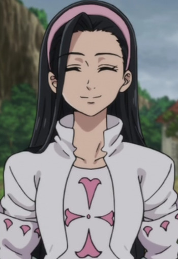

|
Bonnie |
- Pokemon XY
- Pokemon Movie 17: Diancie and the Cocoon of Destruction
- Pokemon: Pikachu, What's This Key?
- Pokemon Movie 18: Hoopa and The Clash of Ages
- Pokemon XYZ
- Pokemon Movie 19: Volcanion and The Mechanical Marvel
- Pokemon XYZ Speicals
|
Bonnie is an aspiring Pokemon Trainer. She is the younger sister of Clemont. Bonnie is a young and cheerful girl who is always excited to meet new Pokemon. She praises her brother for his accomplishment as an inventor but criticizes him if his inventions do not work. Bonnie tries to find a wife for Clemont. |
|  |
Guila |
|
Gulia is a member of Holy Knights and older sister to Zeal. She is very dedicated knight and confident in her abilities. |
 |
Levy McGarden |
- Fairy Tail
- Fairy Tail OVA
- Fairy Tail the Movie: Phoenix Priestess
- Fairy Tail (2014)
- Fairy Tail OVA (2016)
- Fairy Tail Movie 2: Dragon Cry
|
Levy McGarden is a member of the Fairy Tail Guild's team, Shadow Gear, along with Jet and Droy. She has a cheerful personality. Levy loves to read books and become friends with Lucy Heartfilia through their love of book. Her magic is called Solid Script Magic. |
 |
Nanaki Moriyama |
- Fate/kaleid liner Primsa Illya
- Fate/kaleid liner Prisma Illya 2wei!
- Fate/kaleid liner Prisma Illya 2wei! OVA
- Fate/kaleid liner Prisma Illya 2wei Herz!
- Fate/kaleid liner Prisma Illya 2wei Herz! Specials
- Fate/kaleid liner Prisma Illya 3rei!!
- Fate/kaleid liner Prisma Illya 3rei!! Specials
|
Nanaki Moriyama is a friend of Illya and Miyu. |
 |
Pikachu |
- Pokemon Best Wishes! Season 2: Dent and Takeshi! Gyarados's Outrage!!
|
Pikachu is the main Pokemon in all of Pokemon. Pikachu is from the Kanto region and the evolved form of Pichu. Pikachu can recharge each other with their build up energy. Mariya Ise voiced Ayumi's Pikachu. |
 |
Romeo Conbolt |
- Fairy Tail
- Fairy Tail OVA
- Fairy Tail the Movie: Phoenix Priestess
- Fairy Tail (2014)
|
Romeo Conbolt is Macao Conbolt's son. He is a mage of the Guild, Fairy Tail. Romeo is a kind boy who loves his father very much.
|
 |
Urara Kasugano |
- Yes! Pretty Cure 5
- Yes! Pretty Cure 5 Movie: Great Miraculous Adventure of the Mirror Country!
- Yes! Pretty Cure 5 GoGo!
- Yes! Pretty Cure 5 GoGo!: Happy Birthday in the Sweet Kingdom
- Pretty Cure All Stars GoGo Dream Live!
- Pretty Cure All Stars Movie DX: Minna Tomodachi Kiseki no Zenin Daishuugou
- Pretty Cure All Stars Movie DX2: Kibou no Hikari Rainbow Jewel o Mamore
- Pretty Cure All Stars Movie DX3: Reach the Future! The Rainbow Flower that Connects the World
- Pretty Cure All Stars New Stage: Future Friends
- Pretty Cure All Stars New Stage 2: Friends of the Heart
- Pretty Cure All Stars New Stage 3: Friends Forever
- Pretty Cure All Stars Movie: Spring Carnival
- Pretty Cure All Stars the Movie: Everyone Sing! Miraculous Magic
|
Urara Kasugano is the youngest member of the Pretty Cure 5. She is a transfer student and first year at L'Ecole des Cinq Lumieries Middle School. She is a young actress and singer. Urara has a cheerful and expresses personality, but can be shy. Urara is calm, polite, sweet, energetic and very understanding. Her alter ego is Cure Lemonade. |